전산응용기계제도기능사 (2013-01-27 기출문제)
1과목: 기계재료 및 요소
1. 열처리방법 중에서 표면경화법에 속하지 않는 것은?
- 침탄법
- 질화법
- 고주파경화법
- 항온열처리법
(정답률: 64%)

2. 일반적으로 경금속과 중금속을 구분하는 비중의 경계는?
- 1.6
- 2.6
- 3.6
- 4.5
(정답률: 60%)
3. 황동의 자연균열 방지책이 아닌 것은?
- 온도 180~260℃에서 응력제거 풀림처리
- 도료나 안료를 이용하여 표면처리
- Zn 도금으로 표면처리
- 물에 침전처리
(정답률: 71%)
4. 주철의 성장원인이 아닌 것은?
- 흡수한 가스에 의한 팽창
- Fe3C의 흑연화에 의한 팽창
- 고용 원소인 Sn의 산화에 의한 팽창
- 불균일한 가열에 의해 생기는 파열 팽창
(정답률: 47%)
5. 열경화성 수지가 아닌 것은?
- 아크릴수지
- 멜라민수지
- 페놀수지
- 규소수지
(정답률: 43%)
6. 알루미늄의 특성에 대한 설명 중 틀린 것은?
- 내식성이 좋다.
- 열전도성이 좋다.
- 순도가 높을수록 강하다.
- 가볍고 전연성이 우수하다.
(정답률: 72%)
7. 강을 절삭할 때 쇳밥(chip)을 잘게 하고 피삭성을 좋게 하기 위해 황, 납 등의 특수원소를 첨가하는 강은?
- 레일강
- 쾌삭강
- 다이스강
- 스테인레스강
(정답률: 73%)
8. 스프링을 사용하는 목적이 아닌 것은?
- 힘 축적
- 진동 흡수
- 동력 전달
- 충격 완화
(정답률: 73%)
9. 저널 베이링에서 저널의 지름이 30㎜, 길이가 40㎜, 베어링의 하중이 2400N일 때 베어링의 압력[N/㎟]은?
- 1
- 2
- 3
- 4
(정답률: 78%)
10. 시편의 표준거리가 40mm이고 지름이 15mm일 때 최대하중이 6kN에서 시편이 파단 되었다면 연신율은 몇 %인가? (단, 연신된 길이는 10mm이다.)
- 10
- 12.5
- 25
- 30
(정답률: 51%)
2과목: 기계가공법 및 안전관리
11. 웜 기어에서 웜이 3줄이고 웜휠의 잇수가 60개일 때의 속도 비는?
- 1/10
- 1/20
- 1/30
- 1/60
(정답률: 82%)
12. 부품의 위치결정 또는 고정시에 사용되는 체결 요소가 아닌 것은?
- 핀(pin)
- 너트(nut)
- 볼트(bolt)
- 기어(gear)
(정답률: 84%)
13. 비틀림 모멘트를 받는 회전축으로 치수가 정밀하고 변형량이 적어 주로 공작기계의 주축에 사용하는 축은?
- 차축
- 스핀들
- 플랙시블축
- 크랭크축
(정답률: 48%)
14. 축에 키 홈을 파지 않고 축과 키 사이의 마찰력만으로 회전력을 전달하는 키는?
- 새들 키
- 성크 키
- 반달 키
- 둥근 키
(정답률: 62%)
15. 나사를 기능상으로 분류했을 때 운동용 나사에 속하지 않는 것은?
- 볼나사
- 관용나사
- 둥근나사
- 사다리꼴나사
(정답률: 54%)
16. 브로칭 머신을 설치 시 면적을 많이 차지하지만 기계의 조작이 쉽고, 가동 및 안전성이 우수한 브로칭 머신은?
- 수평 브로칭 머신
- 자동형 브로칭 머신
- 수동형 브로칭 머신
- 직립형 브로칭 머신
(정답률: 56%)
17. 측정자의 직선 또는 원호 운동을 기계적으로 확대하여 그 움직임을 지침의 회전 변위로 변환시켜 눈금을 읽을 수 있는 측정기는?
- 다이얼게이지
- 마이크로미터
- 만능 투영기
- 3차원 측정기
(정답률: 61%)
18. 보링 머신에서 할 수 없는 작업은?
- 태핑
- 구멍뚫기
- 기어가공
- 나사깎기
(정답률: 62%)
19. 숫돌입자와 공작물이 접촉하여 가공하는 연삭작용과 전해작용을 동시에 이용하는 특수가공법은?
- 전주 연삭
- 전해 연삭
- 모방 연삭
- 방전 가공
(정답률: 79%)
20. 연삭숫돌의 단위 체적당 연삭 입자의 수, 즉 입자의 조밀정도를 무엇이라 하는가?
- 입도
- 결합도
- 조직
- 입자
(정답률: 38%)
21. 절삭가공 시 절삭에 직접적인 영향을 주지 않는 것은?
- 절삭열
- 가공물의 재질
- 절삭공구의 재질
- 측정기의 정밀도
(정답률: 75%)
22. 신시내티 밀링 분할대로 13등분을 단식 분할 할 경우는?
- 26구멍줄에서 크랭크가 3회전하고 2구멍씩 이동시킨다.
- 39구멍줄에서 크랭크가 3회전하고 3구멍씩 이동시킨다.
- 52구멍줄에서 크랭크가 3회전하고 4구멍씩 이동시킨다.
- 75구멍줄에서 크랭크가 3회전하고 5구멍씩 이동시킨다.
(정답률: 60%)
23. 선반 심압대 축 구멍의 테이퍼 형태는?
- 쟈르노 테이퍼
- 브라노샤프형 테이퍼
- 쟈급스 테이퍼
- 모스 테이퍼
(정답률: 61%)
24. CNC 선반의 준비 기능 중 직선 보간에 속하는 것은?
- G00
- G01
- G02
- G03
(정답률: 65%)
25. 선반의 이송 단위 중에서 1회전당 이송량의 단위는?
- ㎜/rev
- ㎜/min
- ㎜/stroke
- ㎜/s
(정답률: 74%)
3과목: 기계제도
26. 표면거칠기 값(6.3)만을 직접 면에 지시하는 경우 표시방향이 잘못된 것은?
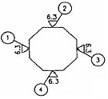
- ①
- ②
- ③
- ④
(정답률: 65%)
27. 대상물의 일부를 떼어 낸 경계를 표시하는데 사용하는 선은?
- 외형선
- 숨은선
- 가상선
- 파단선
(정답률: 76%)
28. 제3각법에 대한 설명으로 틀린 것은?
- 투상 원리는 눈→투상면→물체의 관계이다.
- 투상면 앞쪽에 물체를 놓는다.
- 배면도는 우측면도의 오른쪽에 놓는다.
- 좌측면도는 정면도의 좌측에 놓는다.
(정답률: 66%)
29. 특수한 가공의 하는 부분 등 특별한 요구사항을 적용할 수 있는 범위를 표시하는데 사용하는 선의 종류는?
- 가는 1점 쇄선
- 굵은 1점 쇄선
- 가는 2점 쇄선
- 굵은 2점 쇄선
(정답률: 71%)
30. 다음 중 모양 공차에 속하지 않는 것은?
- 평면도 공차
- 원통도 공차
- 면의 윤곽도 공차
- 평행도 공차
(정답률: 69%)
31. 표면의 결인 줄무늬 방향의 지시기호 “C"의 설명으로 맞는 것은?
- 가공에 의한 커터의 줄무늬 방향이 기호로 기입한 그림의 투상면에 경사지고 두 방향으로 교차
- 가공에 의한 커터의 줄무늬 방향이 여러 방향으로 교차 또는 두 방향
- 가공에 의한 커터의 줄무늬가 기호를 기입한 면의 중심에 대하여 거의 동심원 모양
- 가공에 의한 커터의 줄무늬가 기호를 기입한 면의 중심에 대하여 대략 레이디얼 모양
(정답률: 80%)
32. 다음 그림의 치수 기입에 대한 설명으로 틀린 것은?
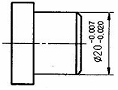
- 기준 치수는 지름 20 이다.
- 공차는 0.013 이다.
- 최대 허용치수는 19.93 이다.
- 최소 허용치수는 19.98 이다.
(정답률: 69%)
33. 다음과 같이 도면에 기하공차가 표시되어 있다. 이에 대한 설명으로 틀린 것은?
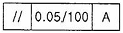
- 기하공차 허용값은 0.⑤㎜이다.
- 기하공차 기호는 평행도를 나타낸다.
- 관련형체로 데이텀은 A이다.
- 기하공차 전체길이에 적용된다.
(정답률: 77%)
34. ∅50H7/p6와 같은 끼워맞춤에서 H7의 공차값은
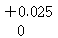
이고, p6의 공차값은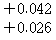
이다. 최대 죔새는?- 0.001
- 0.027
- 0.042
- 0.067
(정답률: 74%)
35. 그림과 같이 축의 흠이나 구멍 등과 같이 부분적인 모양을 도시하는 것으로 충분한 경우의 투상도는?
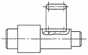
- 회전 투상도
- 부분 확대도
- 국부 투상도
- 보조 투상도
(정답률: 70%)
36. 제3각법으로 그린 투상도에서 우측면도로 옳은 것은?
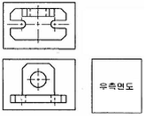
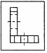
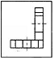
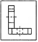
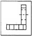
(정답률: 65%)
37. 치수의 위치와 기입 방향에 대한 설명 중 틀린 것은?
- 치수는 투상도와 모양 및 치수의 대조 비교가 쉽도록 관련 투상도 쪽으로 기입한다.
- 하나의 투상도인 경우, 길이 치수 위치는 수평 방향의 치수선에 대해서는 투상도의 위쪽에서 수직 방향의 치수선에 대해서는 투상도의 오른쪽에서 읽을 수 있도록 기입한다.
- 각도치수는 기울어진 각도 방향에 관계없이 읽기 쉽게 수평 방향으로만 기입한다.
- 치수는 수평 방향의 치수선에는 위쪽, 수직 방향의 치수선에는 왼쪽으로 약 0.5㎜ 정도 띄어서 중앙에 치수를 기입한다.
(정답률: 69%)
38. 다음 재료 기호 중 기계구조용 탄소강재는?
- SM 45C
- SPS 1
- STC 3
- SKH 2
(정답률: 69%)
39. 척도 기입 방법에 대한 설명으로 틀린 것은?
- 척도는 표제란에 기입하는 것이 원칙이다.
- 같은 도면에서는 서로 다른 척도를 사용할 수 없다.
- 표제란이 없는 경우에는 도명이나 품번 가까운 곳에 기입한다.
- 현척의 척도 값은 1:1 이다.
(정답률: 70%)
40. 제3각법으로 그린 정투상도 중 잘못 그려진 투상이 있는 것은?
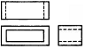
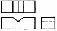
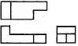
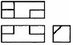
(정답률: 71%)
41. 한국 산업 표준에서 정한 도면의 크기에 대한 내용으로 틀린 것은?
- 제도용지 A2의 크기는 420×594㎜이다.
- 제도용지 세로와 가로의 비는 1:루트 2이다.
- 복사한 도면을 접을 때는 A4크기로 접는 것을 원칙으로 한다.
- 도면을 철할 때 윤곽선은 용지 가장자리에서 10㎜간격을 둔다.
(정답률: 52%)
42. IT 공차에 대한 설명으로 옳은 것은?
- IT 01부터 IT 18까지 20등급으로 구분되어 있다.
- IT 01~IT 4는 구멍 기준공차에서 게이지 제작공차이다.
- IT 6~IT 10은 축 기준공차에서 끼워맞춤 공차이다.
- IT 10~IT 18은 구멍 기준공차에서 끼워맞춤 이외의 공차이다.
(정답률: 65%)
43. 제작 도면으로 완성된 도면에서 문자, 선 등이 겹칠 때 우선순위로 맞는 것은?
- 외형선 → 숨은선 → 중심선 → 숫자, 문자
- 숫자, 문자 → 외형선 → 숨은선 → 중심선
- 외형선 → 숫자, 문자 → 중심선 → 숨은선
- 숫자, 문자 → 숨은선 → 외형선 → 중심선
(정답률: 75%)
44. 그림과 같이 V벨트 풀리의 일부분을 잘라내고 필요한 내부 모양을 나타내기 위한 단면도는?
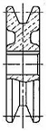
- 온 단면도
- 한쪽 단면도
- 부분 단면도
- 회전도시 단면도
(정답률: 53%)
45. 이론적으로 정확한 치수를 나타내는 치수 보조기호는?
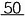
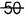
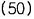
(정답률: 82%)
46. 다음은 계기의 도시기호를 나타낸 것이다. 압력계를 나타낸 것은?
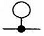
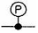
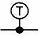
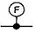
(정답률: 79%)
47. 외접 헬리컬 기어를 축에 직각인 방향에서 본 단면으로 도시할 때, 잇줄 방향의 표시 방법은?
- 1개의 가는 실선
- 3개의 가는 실선
- 1개의 가는 2점 쇄선
- 3개의 가는 2점 쇄선
(정답률: 41%)
48. 모듈 6, 잇수 Z1= 45, Z2= 85, 압력각 14.5°의 한 쌍의 표준기어를 그리려고 할 때, 기어의 바깥지름 D1, D2를 얼마로 그리면 되는가?
- 282㎜, 522㎜
- 270㎜, 510㎜
- 382㎜, 622㎜
- 280㎜, 610㎜
(정답률: 45%)
49. 다음 용접이음의 기본 기호 중에서 잘못 도시된 것은?(오류 신고가 접수된 문제입니다. 반드시 정답과 해설을 확인하시기 바랍니다.)
- v형 맞대기 용접 :
- 필릿 용접 :
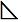
- 플러그 용접 :
- 심 용접 :
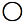
(정답률: 61%)
50. V벨트 풀리에 대한 설명으로 올바른 것은?
- A형은 원칙적으로 한 줄만 걸친다.
- 암은 길이 방향으로 절단하여 도시한다.
- V벨트 풀리는 축 직각 방향의 투상을 정면도로 한다.
- V벨트 풀리의 홈의 각도는 35°, 38°, 40°, 42° 4종류가 있다.
(정답률: 58%)
51. 다음 나사의 종류와 기호 표시로 틀린 것은?
- 미터보통 나사 : M
- 관용평행 나사 : G
- 미니추어 나사 : S
- 전구 나사 : R
(정답률: 69%)
52. 구름 베어링의 호칭번호가 “6203 ZZ"이면 이 베어링의 안지름은 몇 ㎜ 인가?
- 15
- 17
- 60
- 62
(정답률: 78%)
53. 스플릿 테이퍼 핀의 테이퍼 값은?
- 1/20
- 1/25
- 1/50
- 1/100
(정답률: 71%)
54. 스프링의 제도에 있어서 틀린 것은?
- 코일 스프링은 원칙적으로 무하중 상태로 그린다.
- 하중과 높이 등의 관계를 표시할 필요가 있을 때에는 선도 또는 요목표에 표시한다.
- 특별한 단서가 없는 한 모두 왼쪽으로 감은 것을 나타낸다.
- 종류와 모양만을 간략도로 나타내는 경우 재료의 중심선만을 굵은 실선으로 그린다.
(정답률: 77%)
55. 다음 나사의 도시방법으로 틀린 것은?
- 암나사의 안지름은 굵은 실선으로 그린다.
- 완전 나사부와 불완전 나사부의 경계선은 굵은 실선으로 그린다.
- 수나사의 바깥지름은 굵은 실선으로 그린다.
- 수나사와 암나사의 측면도시에서 골지름은 굵은 실선으로 그린다.
(정답률: 56%)
56. 다음 표기는 무엇을 나타낸 것인가?
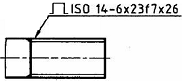
- 사다리꼴나사
- 스플라인
- 사각나사
- 세레이션
(정답률: 63%)
57. 다음 중 서피스 모델링의 특징으로 틀린 것은?
- NC 가공정보를 얻기가 용이하다.
- 복잡한 형상표현이 가능하다.
- 구성된 형상에 대한 중량계산이 용이하다.
- 은선 제거가 가능하다.
(정답률: 59%)
58. 도형의 좌표변환 행렬과 관계가 먼 것은?
- 미러(mirror)
- 회전(rotate)
- 스케일(scale)
- 트림(trim)
(정답률: 72%)
59. CAD시스템의 입력 장치가 아닌 것은?
- 키보드
- 라이트 펜
- 플로터
- 마우스
(정답률: 85%)
60. 컴퓨터의 중앙처리장치(CPU)를 구성하는 요소가 아닌 것은?
- 제어장치
- 주기억장치
- 보조기억장치
- 연산논리장치
(정답률: 66%)